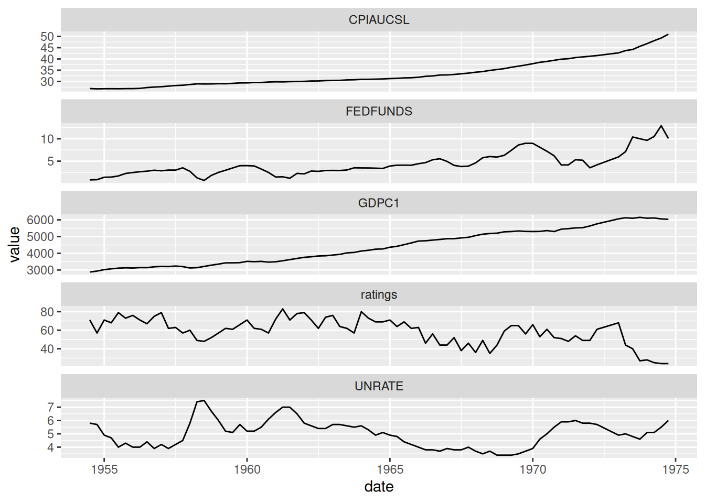
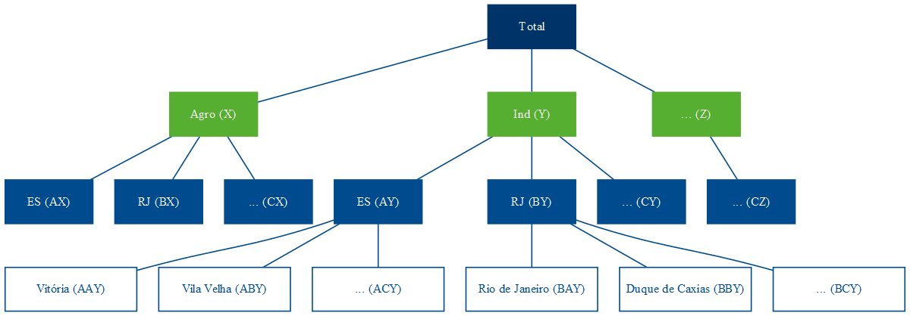
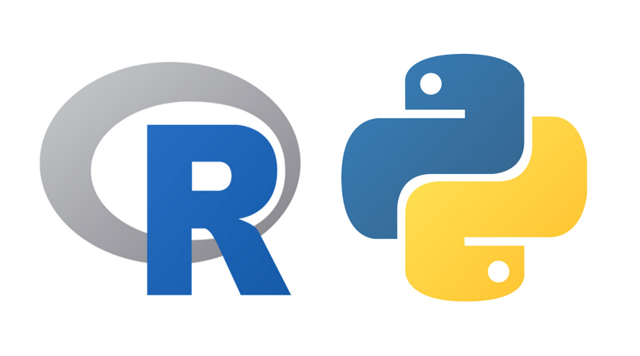
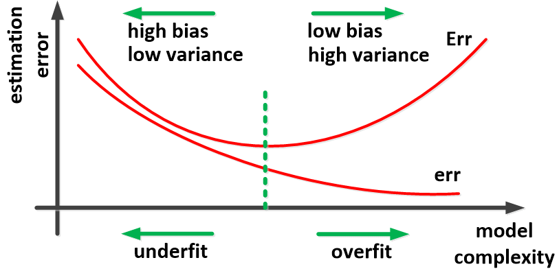
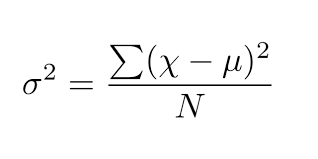

Datamares & Dreamscapes
Português
English
Home
Software
CV
About
Posts
Categorias
Tudo
(15)
education
(1)
machine learning
(2)
news
(1)
python
(1)
statistics
(5)
time-series
(1)
tools
(4)

Todos os modelos estão errados, mas alguns são inúteis
Parte I: Correlação de Pearson e significância
time-series
Quando usar o coeficiente de correlação de Pearson, sempre teste a significância. Mas não o utilize para analisar séries temporais. É um erro comum. Isso viola a…
19 de abr. de 2025
Alberson Miranda

Séries Temporais Hierárquicas: teoria
statistics
Já faz quase uma década que chega nessa época do ano e eu trabalho com previsões de séries temporais lá no Banestes. Na hora de estabelecer metas e objetivos orçamentários…
25 de out. de 2022
Alberson Miranda
O Papel Da Educação Matemática Sob A Hegemonia Do Capital
education
Esse post foi tirado de um capítulo de minha monografia de graduação em Matemática, defendida em 2024.
14 de ago. de 2022
Alberson Miranda
Template para dissertações em Quarto
tools
Aproveitando que começo a escrever minha dissertação este semestre, porque não matar dois coelhos com uma cajadada só (Luisa Mell me perdoa) e conhecer esse tal de Quarto que…
3 de ago. de 2022
Alberson Miranda

Python a partir do R I: importando pacotes (e por que aprender novas linguagens é difícil)
python
Ao aprender uma nova linguagem de programação, simplesmente buscar código equivalente para as práticas que você já tem pode ser enganoso. Aqui vemos que um equivalente à…
12 de jun. de 2021
Alberson Miranda

Um pouco de conceitos: overfitting & resampling
machine learning
Apesar de serem termos recorrentes em
machine learning
,
resampling
e
overfitting
são frequentemente discutidos apenas na prática, muitas vezes sem a sua compreensão. Neste…
17 de abr. de 2021
Alberson Miranda
R em 2021 com o VSCode
tools
Comecei a usar o VSCode em outubro de 2020 quando comecei a estudar Python. Pesquisando sobre o setup ideal, li que a IDE de menor impacto para usuários de R
(R Core Team 2020…
6 de abr. de 2021
Alberson Miranda
Introdução ao framework {mlr3}
machine learning
Esse é o primeiro post de uma série que irá tratar sobre o ecossistema {mlr3}
(Lang et al. 2019)
. Ele é mais completo e também muito mais complexo do que seu predecessor, o…
27 de dez. de 2020
Alberson Miranda
Effect Size e a desigualdade de renda entre gêneros em Vitória
statistics
Ainda há um bocado de coisas para cobrir nessa série de “inferência 101” e, para continuar os estudos, trouxe a base da RAIS (Relação Anual de Informações Sociais) de 2017
1
.…
24 de nov. de 2020
Alberson Miranda

Comparando variâncias: o teste F
statistics
Antes de eu entrar no assunto
machine learning
, porque
é um buraco sem fundo
devo me demorar quando entrar, quero cobrir um pouco mais do básico em inferência.
20 de nov. de 2020
Alberson Miranda
Chutou ou não chutou? O test t para uma amostra
statistics
No post anterior, falei sobre o teste t para duas amostras independentes. Coincidentemente, no dia seguinte apareceu essa dúvida no fórum de matemática do qual sou…
6 de nov. de 2020
Alberson Miranda
Atestando diferenças em médias: o teste t para amostras independentes
statistics
Suponha que você tenha duas amostras (i.e. as rendas da população negra e branca de sua cidade) e você queira comprovar que suas médias sejam
significantemente
diferentes…
2 de nov. de 2020
Alberson Miranda
Qualidade gráfica no painel do RStudio
tools
Se você já plotou um gráfico de linhas no R e, quando viu o plot no painel do RStudio pensou “uau, que qualidade terrível!”, você não está só. Mas não se preocupe, a solução…
19 de out. de 2020
Alberson Miranda
Configurando git em um servidor proxy
tools
Se você estiver trabalhando em uma organização que leva a sério a segurança da informação, então, provavelmente, você está atrás de um servidor proxy e com dificuldades para…
25 de set. de 2020
Alberson Miranda
Hello World
news
Depois de uma ou outra postagem no LinkedIn e Kaggle, já era hora de eu montar meu próprio blog para ciência de dados, não é mesmo?
11 de set. de 2020
Alberson Miranda
Nenhum item correspondente